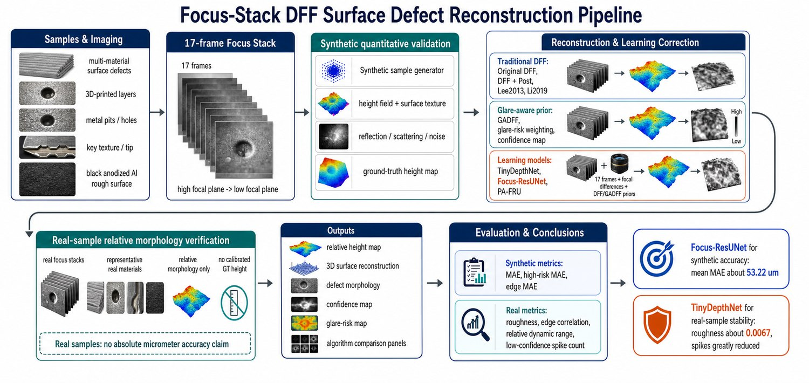
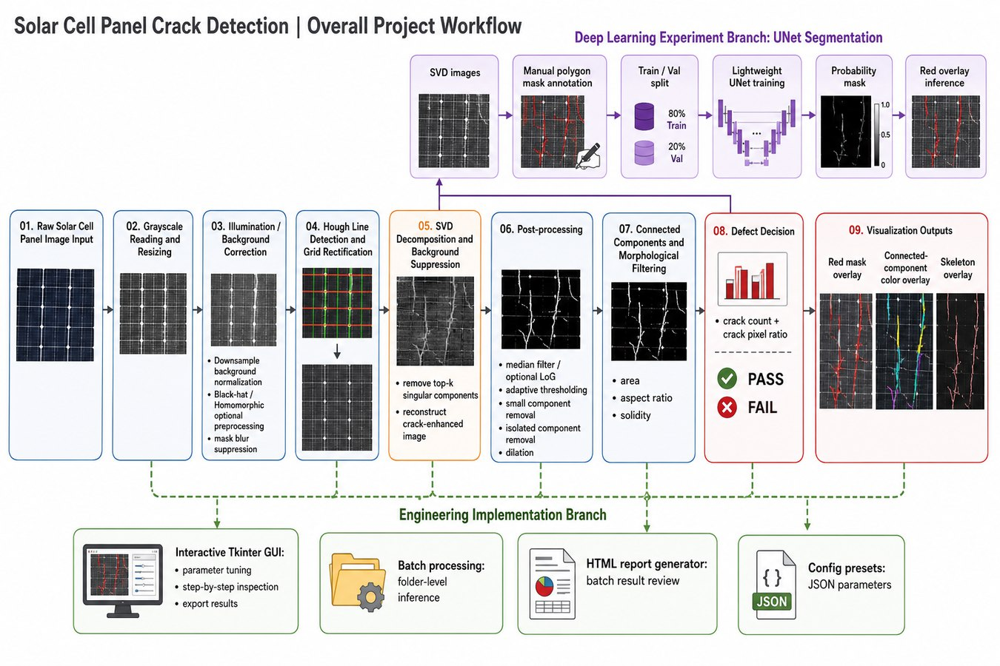

个人简介
关于我
我是浙江大学光电信息科学与工程专业本科生，主要关注计算成像、机器视觉与光学工程系统。近期工作围绕焦点堆栈三维重建、缺陷检测、光学计量，以及面向科研复现的工程软件工具展开。
这个主页汇集了我的代表性研究项目、技术工具、荣誉奖项、课程训练与个人兴趣，便于在申请、交流和项目评审场景中快速了解我的学术训练与工程实践。
科研之外 音乐、摄影与户外记录 点击查看个人简介
我是浙江大学光电信息科学与工程专业本科生，主要关注计算成像、机器视觉与光学工程系统。近期工作围绕焦点堆栈三维重建、缺陷检测、光学计量，以及面向科研复现的工程软件工具展开。
这个主页汇集了我的代表性研究项目、技术工具、荣誉奖项、课程训练与个人兴趣，便于在申请、交流和项目评审场景中快速了解我的学术训练与工程实践。
科研之外 音乐、摄影与户外记录 点击查看荣誉奖项
语言成绩： TOEFL 108/120；CET-6 598；CET-4 623。
代表项目

面向表面缺陷可视化的焦点堆栈成像与 Depth-from-Focus 流程，涵盖眩光感知重建、合成表面模拟与真实样品相对重建。
该项目探索多材料表面缺陷可视化中的焦点堆栈成像、DFF 重建、眩光风险建模与学习式深度校正。公开仓库包含合成表面生成、焦点堆栈模拟、眩光感知评价和代表性对比图生成等可复现实验脚本。



面向太阳能电池图像中裂纹状缺陷的机器视觉流程，结合背景校正、SVD 重建、形态学处理、GUI 检查与 UNet 分割。
该项目整合光照校正、网格校正、SVD 重建、阈值分割、形态学处理、连通域筛选与骨架/叠加可视化。辅助流程基于人工标注的 SVD 图像训练轻量级 UNet，用于像素级裂纹高亮。


用于显微图像对中圆形孔径测量与深度比计算的图像分析工具，包含 OpenCV 检测、手动最小二乘拟合和 Tkinter 界面。
Depth Ratio Detector 是一个工程化测量工具，用于从上下表面图像对中测量圆孔半径并计算样品深度比。工具支持自动 Hough 圆检测、手动最小二乘拟合、标注结果导出，以及不同成像条件下的参数复用。


其他项目与经历

在第十三届全国大学生光学设计竞赛中使用 Zemax 开展光学设计，内容包括结构优化、无热化分析、鬼像评估、MTF 评价、成本与公差分析、镜筒装配规划和 Monte Carlo 良率验证。

使用 LEGO Studio 设计显微镜机械模块，参与 Zemax 光路设计，并在浙江大学光学科研 Family 项目中协作完成荧光显微镜原型。

参加学校组织的美国学术交流项目，在 NYU、Columbia、MIT、Harvard 和 Yale 参与 STEM 方向短期模块与学术交流；所在团队获得项目二等奖。
在浙江大学电磁波研究中心训练期间，完成研究计划写作、文献综述、数据可视化分析与学术海报准备。
创意工具与副项目
精选资源
技能与课程
编程与工程软件：C/C++、Python、MATLAB、SolidWorks、Zemax、AutoCAD、OpenCV，以及基于 PyTorch 的项目流程。
写作与设计：LaTeX、Markdown、Overleaf、Obsidian、Office、Photoshop、Canva、秀米与 CapCut，用于报告与多媒体材料制作。
优势课程：硅光子学 96/100；电磁场与电磁波 94/100；物理光学 92/100；计算机辅助光学系统设计 93/100；机器视觉与图像处理 92/100。
联系
可通过 3230105050@zju.edu.cn 或 lssnake0105@outlook.com 联系我。 代码与项目材料可在 github.com/lssnake0105 查看。
网站统计
GitHub Pages 全站累计访问量。